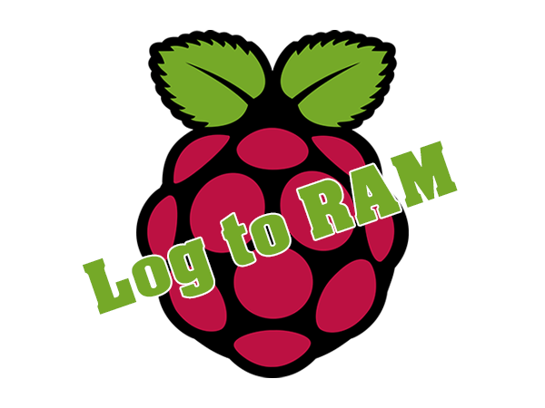
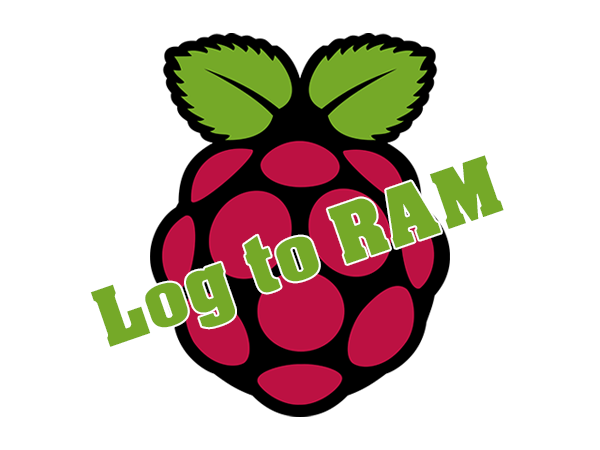

1h | DÉVELOPPEMENT

1h | DÉVELOPPEMENT

Ayant acquérit une Raspberry Pi 4 modèle B durant l'été 2019, j'ai rapidement réfléchi à un moyen d'optimiser l'appareil afin d'augmenter la longévité de la carte microSD.
Une carte microSD est une mémoire de type flash, ce qui signifie qu'elle a droit à un certain nombre d'écriture sur une même zone.
Les logs étant constamment réécrit, j'estimais une utilisation 24 heures sur 24 pour une longévité de la carte microSD entre 6 mois et 1 an grand maximum.
Suite à cette estimation, je me suis documenter sur la façon que les logs sont pris sur le système d'exploitation Raspbian.
Raspbian est un système d'exploitation basé sur Debian particulièrement optimisé pour la Raspberry Pi et développé par le constructeur de ce micro-ordinateur.
J'ai pu remarquer la similarité avec Ubuntu, utilisé sur le serveur privé virtuel fourni dans le cadre du projet du cours de Système d'Administration de 2ème année en Technologie de l'Informatique à l'EPHEC.
Je me suis mis à créer un service, chargé au démarrage du système, de réécrire les logs stocké en RAM sur la mémoire principale toutes les 3h et à extinction/redémarrage de l'appareil.
De plus, j'ai modifié certains paramètres afin que la majeure partie des logs se retrouvent modifié directement en RAM et non sur la mémoire principale.
Ainsi, avec le service et les paramètres modifiés, la boucle est bouclée.
Dans le cadre du projet d'intégration de 3ème année, nous avons eu l'idée de mettre en place un appareil de suivi de la température, de l'humidité et de la pression atmoshpérique.
Cet appareil étant basé sur l'architecture des Raspberry Pi et prototypé ainsi que finalisé sur ma Raspberry Pi 4 modèle B, le fait d'avoir développé ceci durant l'été s'est avéré fort pratique.
Grâce à cela, nous pouvons proposer dans le cadre du projet d'intégration un appareil ayant une durée de vie plus longue.
J'utilise ce développement également sur une 2ème carte microSD utilisé pour de futurs projets personnel.